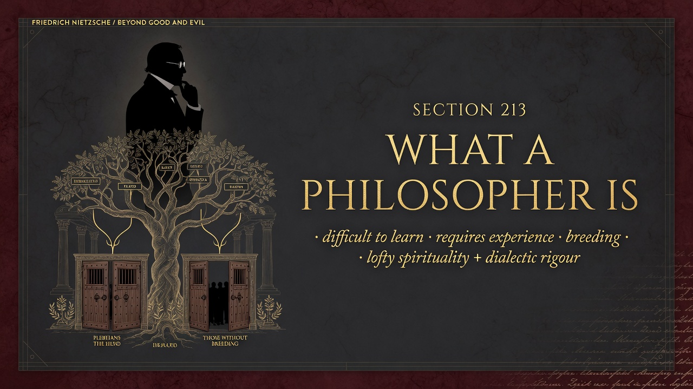
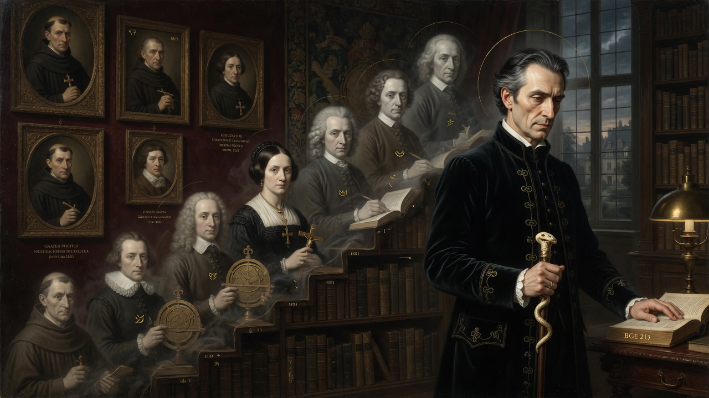

Part Six: We Scholars • Beyond Good and Evil
Section 213 states that what a philosopher is cannot be taught; it must be known from experience—or one should have the pride not to know it. Most talk about philosophers is false because it lacks experience. The genuine association of exuberant spirituality speeding presto with dialectical strictness and necessity is unknown to most scholars, who imagine thinking as slow, hesitant, and laborious.
Artists often sense more subtly that necessity and freedom of the will become one at the height of creation. There is a rank ordering of spiritual conditions corresponding to problems. The highest problems repel those not predestined for them. Crude feet may never tread the highest carpets; doors remain closed even if heads are banged against them.
One must be born or cultivated for philosophy in the grand sense; “blood” decides. For a philosopher to arise, many generations must have prepared the virtues: boldness and lightness of thought, willingness to take great responsibilities, loftiness of look, feeling of standing apart, protection of the misunderstood, desire for great justice, the art of commanding, breadth of will, the slow eye that seldom admires or loves.
Modern companion: Democratized education and professional credentialing assume philosophy can be mass-produced through training. Nietzsche insists on aristocratic preparation—long cultivation of rare virtues. The free spirit honours the demand for genuine descent in spirit and takes responsibility for cultivating the conditions in which such types can again emerge, rather than pretending every certified scholar is a philosopher.

